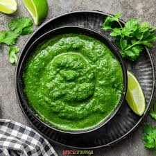

Home
Green Chutney

About
A vibrant, flavorful sauce made from fresh coriander, mint leaves, green chilies, garlic, lemon juice, and spices—commonly served as a tangy and spicy accompaniment to snacks like Vada pav, Sandwiches.
Ingredients
- 1 cup fresh coriander leaves (cilantro), packed
- ½ cup fresh mint leaves
- 2-3 green chilies (adjust to taste)
- 2 garlic cloves
- 1 small piece of ginger (about 1 inch)
- 1 tablespoon lemon juice
- 1 teaspoon sugar
- Salt to taste
- 2-3 tablespoons water (as needed)
Steps
- Wash coriander and mint leaves thoroughly.
- In a blender, add coriander, mint, green chilies, garlic, ginger, lemon juice, sugar, salt, and water.
- Blend to a smooth paste, adding more water if needed for desired consistency.
- Taste and adjust salt or lemon juice if needed.
- Serve fresh with snacks, sandwiches,Vada pav or pav bhaji.
Home